Vegetable Name in English and Hindi with Picture
Vegetables are among the most essential components of a healthy diet. Packed with vitamins, minerals, fiber, antioxidants, and a range of bioactive compounds, they play a vital role in promoting good health, preventing chronic disease, and supporting overall well-being. From leafy greens to vibrant root vegetables, the diversity of plant-based foods available provides an exciting array of flavors, textures, and nutrients that can be enjoyed in countless ways.
Vegetables are many varieties, including leafy greens (like spinach and kale). root vegetables (like carrots and potatoes) Cruciferous vegetables (like broccoli and cauliflower, and legumes)
Vegetable Name in English and Hindi
| sr | vegetable image | vegetable name in english | vegetable name in hindi |
|---|---|---|---|
| 1 | 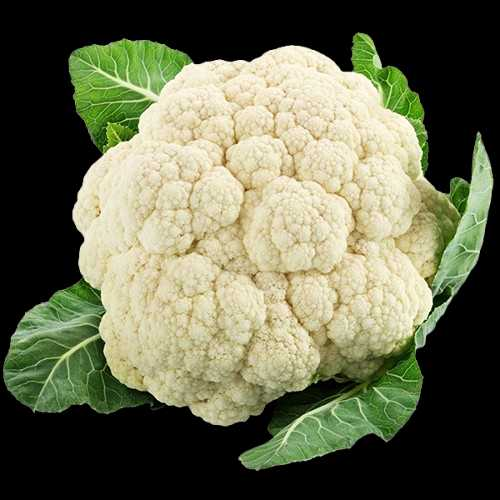 | Cauliflower | फूलगोभी (Phool Gobhee) |
| 2 | 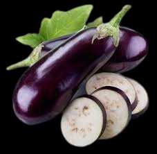 | Brinjal | बैंगन (Baingan) |
| 3 | Capsicum | शिमला मिर्च (Shimala Mirch) | |
| 4 | 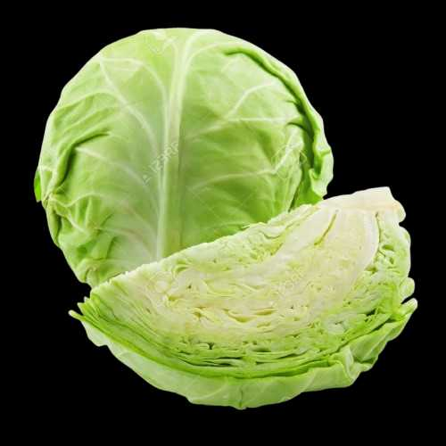 | Cabbage | पत्ता गोभी (Patta Gobhee) |
| 5 | 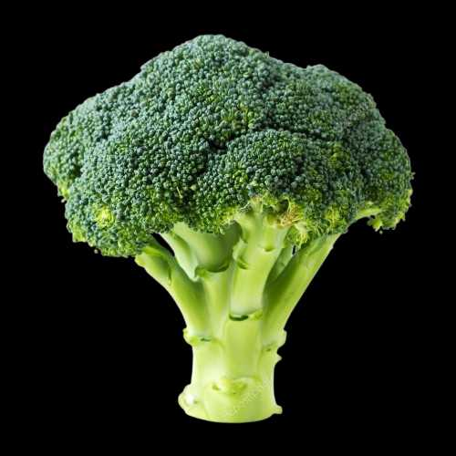 | Broccoli | ब्रोकोली (Brokolee) |
| 6 |  |
Bottle Gourd | लौकी (Laukee) |
| 7 | 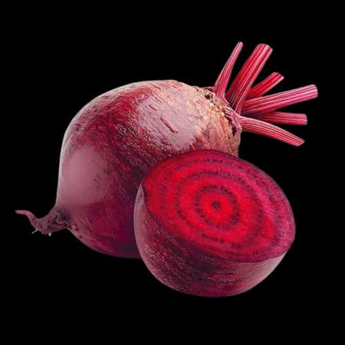 | Beetroot | चुकंदर (Chukandar) |
| 8 | 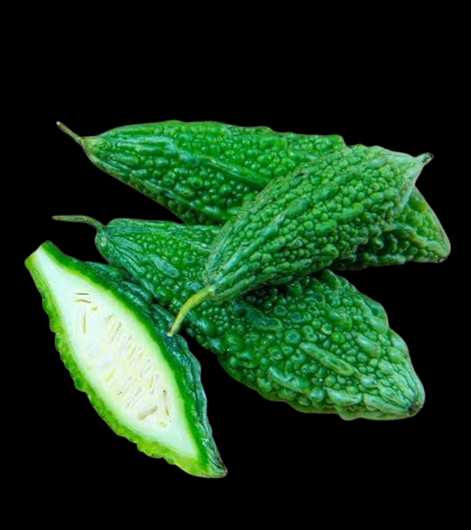 | Bitter-gourd | करेला (Karela) |
| 9 | 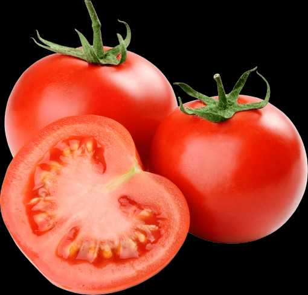 | Tomato | टमाटर (Tamaatar) |
| 10 |  |
Drumstick | सहजन (Sahajan) |
| 11 |  |
Elephant Yam/Elephant's foot | सूरन (Suran) |
| 12 | 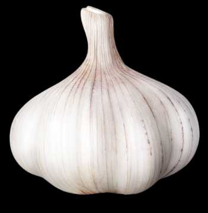 | Garlic | लहसुन (Lahasun) |
| 13 |  |
Green Papaya | हरा पपीता (Hara Papeeta) |
| 14 |  |
Peas | मटर (Matar) |
| 15 | 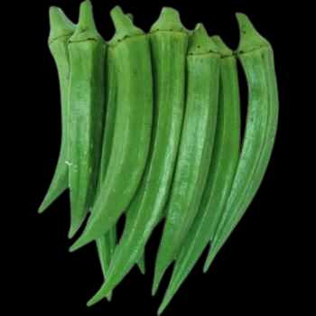 | Ladyfinger | भिंडी (Bhindee) |
| 16 | 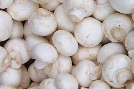 | Mushroom | मशरूम (Masharoom) |
| 17 |  |
Ivy gourd | कुंदरू (Kundru) |
| 18 | 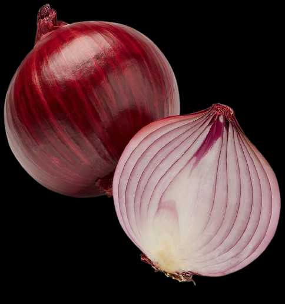 | onion | प्याज (Pyaaj) |
| 19 | 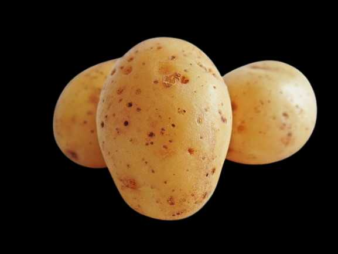 | Potato | आलू (Aaloo) |
| 20 | 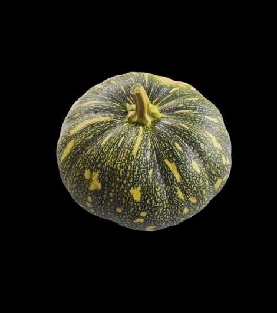 | Pumkin | कद्दू (Kaddoo) |
| 21 | 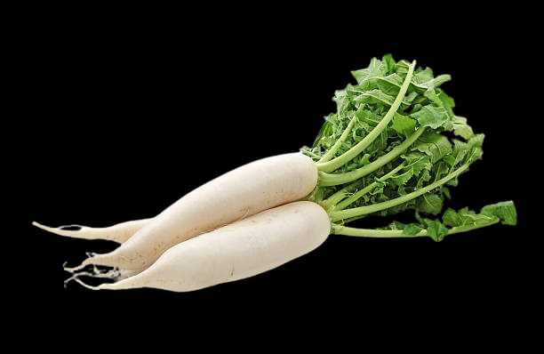 | Radish | मूली (Moolee) |
| 22 |  |
Ridge Gourd | तोरई (Toree) |
| 23 |  |
long Bean/Snake Bean | बोडा (Boda) |
| 24 | 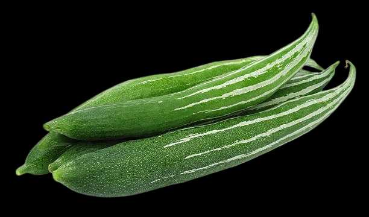 | Snake-gourd | चिचिण्डा (Chichinda) |
| 26 | 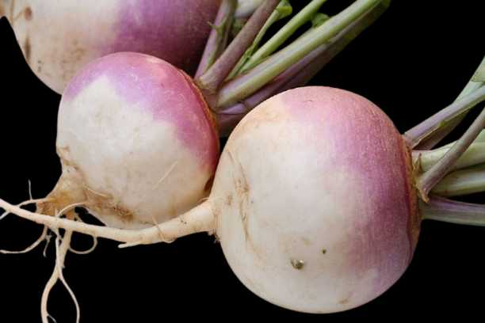 | Turnip | शलजम (Shalajam) |
| 27 |  |
Ashgourd | राख लौकी (Raakh Laukee) |
| 28 |  |
Apple gourd | सेब लौकी (Seb Laukee) |
| 29 |  |
White Pumkin | सफ़ेद कद्दू (Safed Kaddoo) |
| 30 | 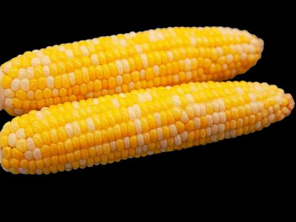 | corn | भुट्टा (Bhutta) |
| 31 |  |
Cluster beans | क्लस्टर बीन्स (Klastar Beens) |
| 32 |  |
lab lab beans | लैब लैब बीन्स (Laib Laib Beens) |
| 33 | 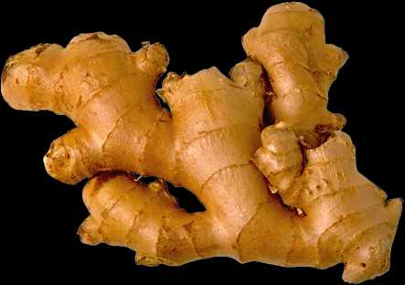 | Ginger | अदरक (Adarak) |
| 34 | 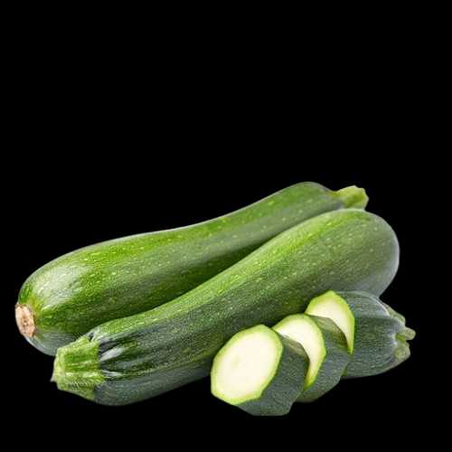 | zucchini | तोरी (Toree) |
| 35 | 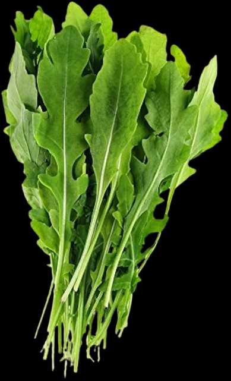 | Arugula | आर्गुला (Aarugula) |
| 36 | 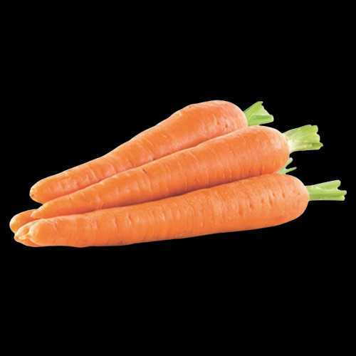 | Carrot | गाजर (Gaajar) |
| 37 | 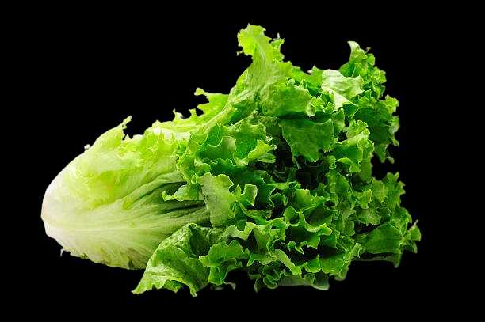 | lettuce leaf | सलाद पत्ता (Salaad Patta) |
| 38 | 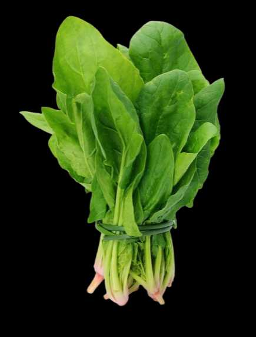 | Spinach | पालक (Paalak) |
| 39 | 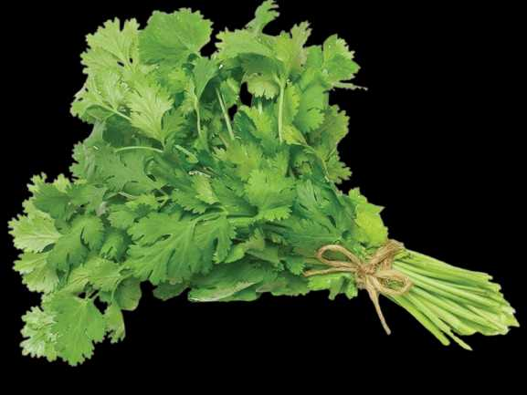 | Coriander leaves | धनिए के पत्ते (Dhanie Ke Patte) |
| 40 | 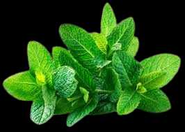 | Mint | पुदीना (Pudeena) |
| 41 | 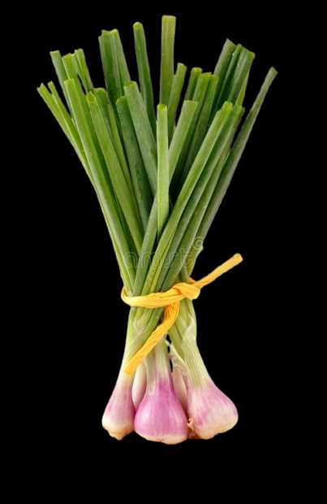 | Spring onion | हरी प्याज (Haree Pyaaj) |
| 42 | 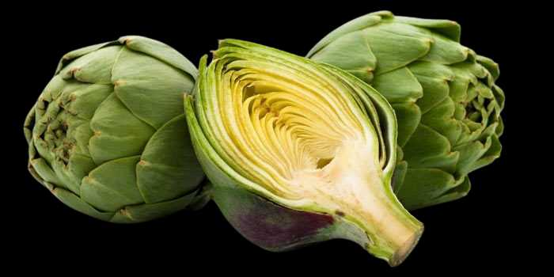 | Artichoke | हाथी चक (Haathee Chak) |
| 43 |  |
Banana flower | केले का फूल (Kele Ka Phool) |
| 44 |  |
Romanesco broccoli | रोमनस्को ब्रोकोली (Romanasko Brokolee) |
| 45 |  |
Zucchini flower | तोरी का फूल (Toree Ka Phool) |
| 46 | 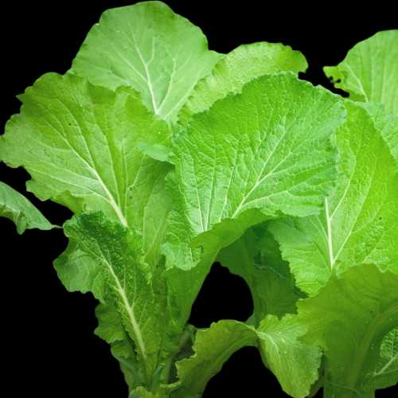 | Mustard leaf | सरसों का पत्ता (Sarason Ka Patta) |
| 47 | 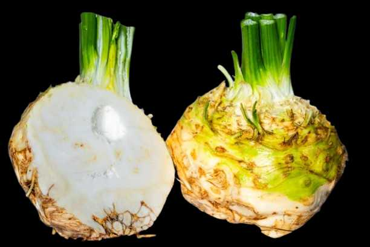 | Celeriac | अजवाइन (Ajavain) |
| 48 | 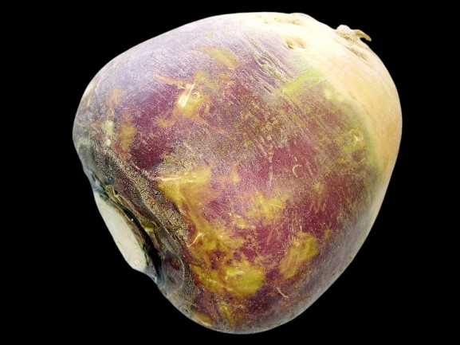 | Rutabaga/Swede | रुतबागा/स्वीडन (Rutabaaga/Sveedan) |
| 49 |  |
Sugar beet | मीठे चुक़ंदर (Meethe Chuqandar) |
| 50 | Parsnip | चुकंदर (Chukandar) | |
| 51 | Horseradish | हॉर्सरैडिश (Horsaraidish) | |
| 53 | Tapioca | कसावा (Kasaava) | |
| 54 | Arracacia | कुल्फा (Kulpha) | |
| 55 |  |
Greater yam | रतालू (Rataaloo) |
| 56 | 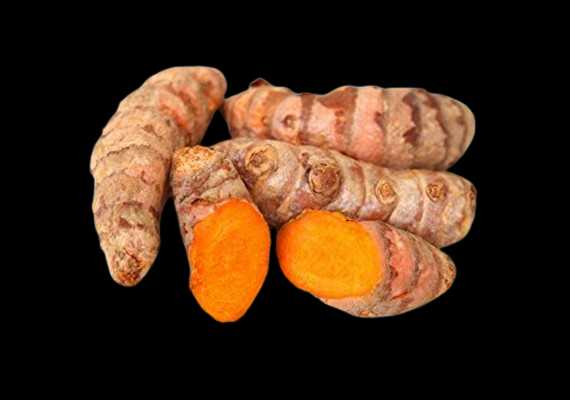 | Turmeric | हल्दी (Haldee) |
| 57 |  |
Purple yam | बैंगनी रतालू (Baingan Rataloo) |
| 58 |  |
Chinese potato | चीनी आलू (Cheenee Aaloo) |
| 59 | 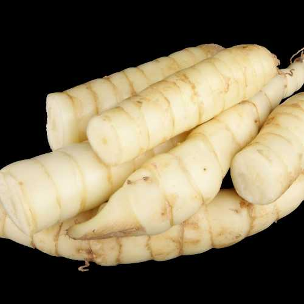 | Arrowroot | अरारोट (Araarot) |
| 60 | 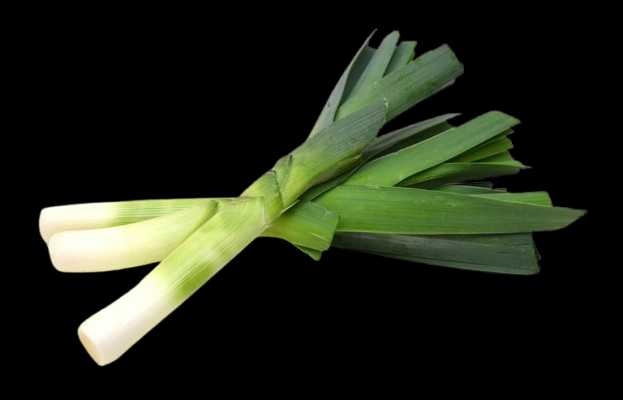 | Leek | हरा प्याज (Hara Pyaaj) |
| 61 | 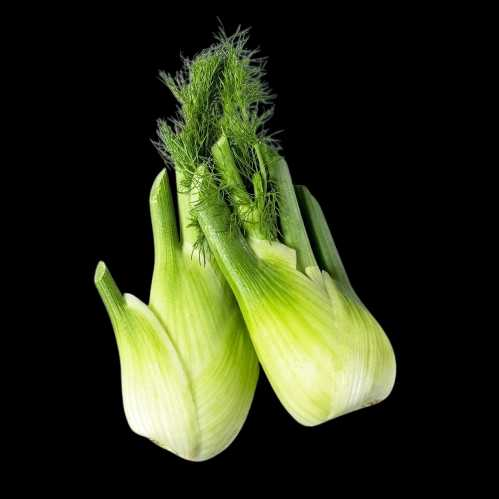 | Fennel | सौंफ (Saumph) |
| 62 | 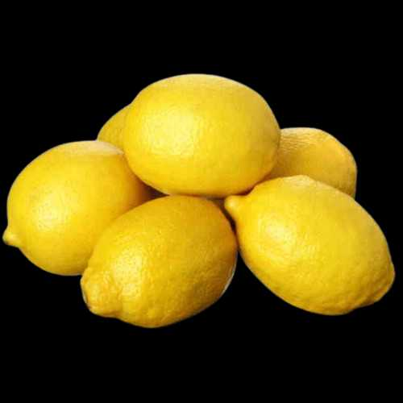 | Lemon | नींबू (Nimbu) |
| 63 |  |
Spine Gourd | कंटोला (Kantola) |
| 64 | 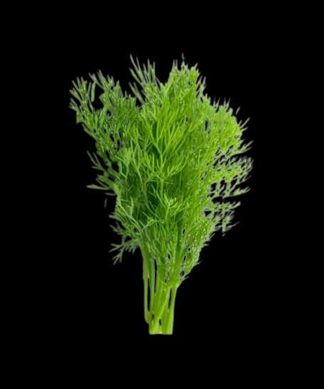 | Dill | सोआ (Sowa) |
| 65 | 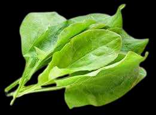 | Sorrel | खट्टे पत्ते (Khatte Patte) |
| 66 | 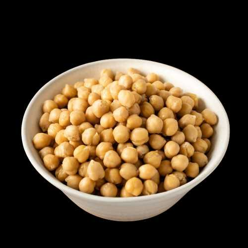 | Chickpeas | चना (Chana) |
| 67 |  |
Radish Pods | मूली की फली (Mooli Ki Phali) |
| 68 |  |
Red Chilli | लाल मिर्च (Laal Mirch) |
| 69 | 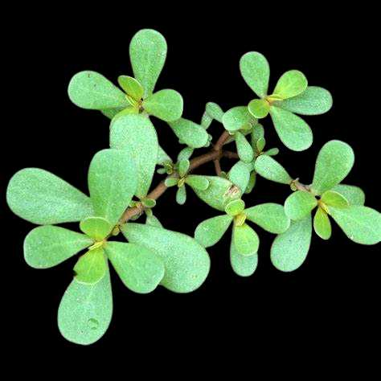 | Purslane | कुलफा (Kulapha) |
| 70 | 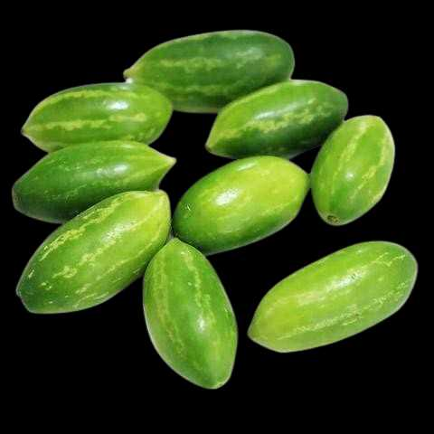 | Tendli | कुंदरू (Kundaroo) |
| 71 |  |
Fenugreek Leaves | मेथी के पत्ते (Methi Ke Patte) |
| 72 |  |
Curry Leaf | करी पत्ता (Curry Patta) |
| 73 | 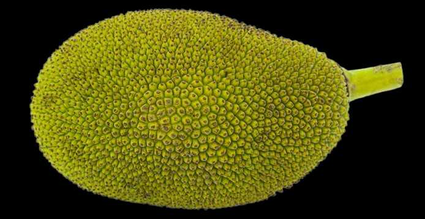 | Jackfruit | कटहल (Kathal) |
| 74 |  |
Black Carrot | काली गाजर (Kaali Gajar) |
| 75 | 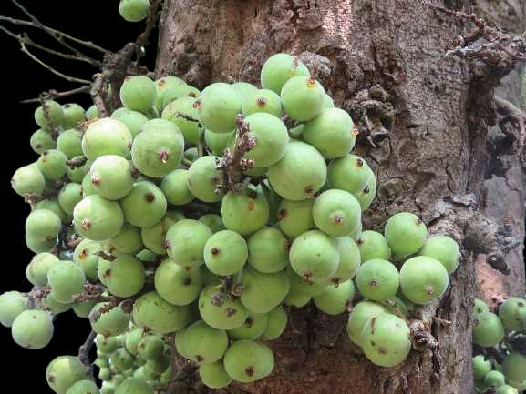 | Ficus | गूलर (Goolar) |
| 76 | 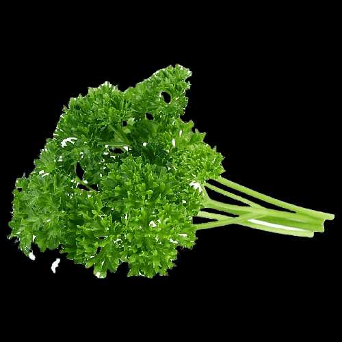 | Parsley | अजमोद (Ajmod) |
| 77 |  |
Kidney beans | राजमा (Rajma) |
| 78 |  |
Bamboo Shoots | बांस की कलियाँ (Bans Ki Kaliyan) |
| 79 | 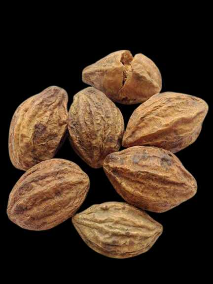 | Myrobalan | हरड़ (Harad) |
| 80 | 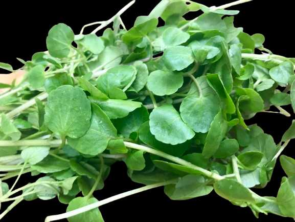 | Watercress | जलकुंभी (Jalakumbhee) |
| 81 |  |
Red Cabbage | लाल पत्तागोभी (Laal Pattagobhi) |
| 82 |  |
Green Chili | हरी मिर्च (Hari Mirch) |
| 83 |  |
White Eggplant | सफेद बैंगन (Safed Baingan) |
| 84 |  |
Raw Banana | कच्चा केला (Kachcha Kela) |
Nutritional Value of Vegetables
One of the most compelling reasons to eat vegetables is their impressive nutritional profile. Vegetables are low in calories and fat while being high in essential nutrients. They provide:
Vitamins: Vegetables are rich in vitamins such as vitamin A (from beta-carotene), vitamin C, vitamin K, and several B vitamins including folate.
Minerals: They are also excellent sources of minerals such as potassium, magnesium, iron, and calcium.
Fiber: Dietary fiber found in vegetables supports digestive health, regulates blood sugar levels, and helps maintain a healthy weight.
Antioxidants: Compounds like flavonoids, carotenoids, and polyphenols protect the body from oxidative stress and reduce inflammation.
Health Benefits of Vegetables
Eating a wide variety of vegetables daily contributes to numerous health benefits:
1. Heart Health
Vegetables like spinach, kale, and broccoli are rich in potassium and fiber, which help lower blood pressure and cholesterol levels. Their antioxidants also reduce inflammation and prevent arterial damage.
2. Digestive Health
Fiber promotes regular bowel movements, prevents constipation, and feeds healthy gut bacteria, improving digestive function.
3. Weight Management
Low in calories and high in fiber and water, vegetables help create a feeling of fullness, reducing the urge to overeat.
4. Cancer Prevention
Phytochemicals like sulforaphane in cruciferous vegetables, and lycopene in tomatoes, have been shown to inhibit the growth of certain types of cancer cells.
5. Eye Health
Carotenoids such as lutein and zeaxanthin, found in carrots, spinach, and sweet corn, protect the eyes from age-related damage and cataracts.
Type of vegetables
There are many types of vegetables in nature, and they can be classified into different categories based on their shape, color, and parts.
Root vegetabless
Root vegetables are those that grow beneath the ground and store vitamins, minerals, and carbohydrates.
- Carrot - गाजर (Gaajar)
- Turnip - शलजम (Shalajam)
- Beetroot - चुकंदर (Chukandar)
- Horseradish - सहिजन (Sahijan)
- Rutabaga - शलजम (Shalajam)
- Radish - मूली (Moolee)
- Sugar beet - मीठे चुक़ंदर (Meethe Chuqandar)
- Parnip - चुकंदर (Chukandar)
Leafy Vegetables
- Spinach - पालक (Paalak)
- Cabbage - पत्ता गोभी (Patta Gobhee)
- Mint - पुदीना (Pudeena)
- Mustard greens - सरसों का साग (Sarason Ka Saag)
- Romaine lettuce - रोमेन सलाद (Romen Salaad)
- Arugula - आर्गुला (Aargula)
- Coriander leaves - धनिए के पत्ते (Dhanie Ke Patte)
- rapini - रापिनी (Raapinee)
- Lettuce - सलाद (Salaad)
Fruit vegetables
- Tomato - टमाटर (Tamaatar)
- Pumpkin - कद्दू (Kaddoo)
- Cucumber - खीरा (Kheera)
- Eggplant - बैंगन (Baingan)
- Green peas - हरे मटर (Hare Matar)
- Corn - भुट्टा (Bhutta)
- Ladyfinger - भिंडी (Bhindee)
- Beans - फलियाँ (Phaliyaan)
- Peppers - मिर्च (Mirch)
Flower vegetables
- Broccoli - ब्रोकोली (Brokolee)
- Zuchhini flowers - तोरी के फूल (Toree Ke Phool)
- Cauliflower - फूलगोभी (Phoolagobhee)
- Artichoke - हाथी चक
- Romanesco broccoli (Haathee Chak)
50 Vegetable Name With Pronunciation in Hindi
| sr | vegetables Name | Pronunciation in Hindi | Vegetables in Hindi |
|---|---|---|---|
| 1 | Cauliflower | कॉलीफ्लॉवर | फूलगोभी |
| 2 | Broccoli | ब्रोकोली | ब्रोकोली |
| 3 | Cabbage | कैबेज | पत्ता गोभी |
| 4 | Beetroot | बीटरूट | चुकंदर |
| 5 | Drumstick | ड्रमस्टिक | सहजन |
| 6 | Tomato | टोमैटो | टमाटर |
| 7 | Bitter-gourd | बिटर गॉर्ड | करेला |
| 8 | Mushroom | मशरूम | मशरूम |
| 9 | Peas | पीस | मटर |
| 10 | Ladyfinger | लेडी फिंगर | भिंडी |
| 11 | Pumkin | पम्पकिन | कद्दू |
| 12 | onion | ऑनियन | प्याज |
| 13 | Potato | टोमैटो | आलू |
| 14 | Ridge Gourd | रिज गॉर्ड | तोरई |
| 15 | long Bean/Snake Bean | लॉन्ग बीन/स्नेक बीन | बोडा |
| 16 | Radish | रैडिश | मूली |
| 17 | Turnip | टर्पिन | शलजम |
| 18 | corn | कॉर्न | भुट्टा |
| 19 | Ginger | जिंजर | अदरक |
| 20 | zucchini | ज़ुच्चीणि | तोरी |
| 21 | Carrot | कैरट | गाजर |
| 22 | Coriander leaves | कोरिएंडर लीव्स | धनिए के पत्ते |
| 23 | Spinach | स्पिनैच | पालक |
| 24 | Banana flower | बानाना फ्लावर | केले का फूल |
| 25 | Zucchini flower | ज़ुच्चीणि फ्लावर | तोरी का फूल |
| 26 | Mustard leaf | मस्टर्ड लीफ | सरसों का पत्ता |
| 27 | Parsnip | परसनिप | चुकंदर |
| 28 | Greater yam | ग्रेटर याम | रतालू |
| 29 | Turmeric | टर्मेरिक | हल्दी |
| 30 | Leek | लीक | हरा प्याज |
| 31 | Lemon | लेमन | नींबू |
| 32 | Chickpeas | चिकपीज | चना |
| 33 | Red Chilli | रेड चिल्ली | लाल मिर्च |
| 34 | Fenugreek Leaves | फेनुग्रीक लीव्स | मेथी के पत्ते |
| 35 | Jackfruit | जैकफ्रूट | कटहल |
| 36 | Black Carrot | ब्लैक कैरट | काली गाजर |
| 37 | Kidney beans | किडनी बीन्स | राजमा |
| 38 | Green Chili | ग्रीन चिली | हरी मिर्च |
| 39 | Raw Banana | रॉ बानाना | कच्चा केला |
| 40 | Red Cabbage | रेड कैबेज | लाल पत्तागोभी |
| 41 | Bamboo Shoots | बम्बू शूट्स | बांस की कलियाँ |
| 42 | Red Cabbage | रेड कैबेज | लाल पत्तागोभी |
| 43 | Fennel | फेनेल | सौंफ |
| 44 | Mint | मिंट | पुदीना |
| 45 | lettuce leaf | लेट्स लीफ | सलाद पत्ता |
| 46 | Cluster beans | क्लस्टर बीन्स | क्लस्टर बीन्स |
| 47 | Apple gourd | एप्पल गॉर्ड | सेब लौकी |
| 48 | Ashgrourd | अश गॉर्ड | राख लौकी |
| 49 | Ivy gourd | इवी गॉर्ड | कुंदरू |
| 50 | Bottle Gourd | बोतल गॉर्ड | लौकी |
FAQ's of Vegetables
What is the name of 10 vegetables
potato, tomato, onion, eggplant, cauliflower, peppers, okra, spinach, carrot, cucumber.
Which vegetable is called the king of vegetables?
Brinjal
Who is the queen of Vegetables?
Ladyfinger
Which is the national vegetable of India?
Pumpkin